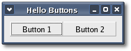

|
Chapter
3: Hello Buttons
Let's take a look at Hello Buttons, a slightly improved version of Hello World
that provides a better
example of using libsigc++ signals
and slots. Hello Buttons makes
use of a horizontal packing box
to pack two buttons into
the main window. A packing box is a rectangular layout
container
that lets you pack one or more child widgets inside it, with respect to
a particular position, either the start or the end. A packing box is a
very convenient way to manage the
position and relative size of several child widgets.
One thing you will notice in the Hello Buttons source code
is that the signals
and
slots
make use of the sigc::bind() function to bind
an extra argument that gets passed to the connected slot every
time a "clicked" signal is emitted. This is one of the many powerful
functions available in the libsigc++ library, and one that you will use
frequently, so do familiarize yourself with its documentation.
The header file for the Hello Buttons program is
<hellobuttons.hh>:
#include
<xfc/main.hh>
#include <xfc/gtk/window.hh>
using namespace Xfc;
class HelloButtons : public Gtk::Window
{
protected:
void on_clicked(const char *text);
public:
HelloButtons();
virtual ~HelloButtons();
};
and the source file is <hellobuttons.cc>:
#include
"hellobuttons.hh"
#include <xfc/gtk/box.hh>
#include <xfc/gtk/button.hh>
#include <iostream>
HelloButtons::HelloButtons()
{
// This is a new call, which just sets
the title of
our new window to "Hello Buttons!"
set_title("Hello Buttons");
// Set the default
size of the
window
set_default_size(200, -1);
// Sets the border width of the window.
set_border_width(10);
// We create a box to pack widgets into.
The box is
not really visible, it is just used
// as a tool to arrange widgets.
Gtk::HBox *box = new Gtk::HBox;
// Put the box into the main window.
add(*box);
// Creates a new button with the label
"Button 1".
Gtk::Button *button = new
Gtk::Button("Button 1");
// Now when the button is clicked, we
call the slot
function with a pointer to "button 1" bound to it.
button->signal_clicked().connect(sigc::bind(sigc::mem_fun(this,
&HelloButtons::on_clicked), "button 1"));
// Instead of Gtk::Container::add, we
pack this
button into the invisible box, which has been added to the window.
box->pack_start(*button);
// Always remember this step, this tells XFC that
our preparation for this button is complete,
// and it can now be displayed.
button->show();
// Do these same steps again to create a
second
button
button = new Gtk::Button("Button 2");
// Call the same slot function with a
different
argument, passing a pointer to "button 2" instead.
button->signal_clicked().connect(sigc::bind(sigc::mem_fun(this,
&HelloButtons::on_clicked), "button 2"));
box->pack_start(*button);
// The order we show the buttons is not
really
important, but I recommend always showing the window last,
// so it all pops up at once.
button->show();
box->show();
}
HelloButtons::~HelloButtons()
{
}
void
HelloButtons::on_clicked(const char *text)
{
std::cout << "Hello again"
<< " - "
<< text << " " << "was
pressed" << std::endl;
}
int main (int argc, char *argv[])
{
using namespace Main;
init(&argc, &argv);
HelloButtons window;
window.signal_destroy().connect(sigc::ptr_fun(&Xfc::Main::quit));
window.show();
run();
return 0;
}
Compiling Hello Buttons
If you compiled and installed XFC yourself, you will find the source
code for Hello Buttons in the
<examples/tutorial/chapter03> source directory along with a Makefile. If
XFC came pre-installed, or you installed it from an RPM package, you
will
find the source code in the
</usr/share/doc/xfcui-X.X/examples/tutorial/chapter03> subdirectory. In
this case you will have to create the Makefile yourself (replace X.X
with the
version number of the libXFCui library you have installed).
To create a Makefile for Hello Buttons, add the following lines to a
new
text file
and save it using the name "Makefile":
CC = g++
CFLAGS = -Wall -O2
hellobuttons: hellobuttons.cc hellobuttons.hh
$(CC) hellobuttons.cc -o hellobuttons `pkg-config
xfcui-X.X
--cflags --libs`
clean:
rm -f *.o hellobuttons
If you cut and paste these lines make sure the whitespace before $(CC)
and rm is a tab character. When
you
compile and run this program you will see the following window appear:

Run the program from a command shell. This time you will notice that
there is no easy way to exit the
program; you have to use your window manager or command line to kill
it.
A good exercise for the reader would be to insert a third "Quit" button
that will exit the program. You may also wish to play with the options
passed to Gtk::Box::pack_start(). Try resizing
the window, and observe the two buttons' behavior.
Stepping through the source code
The "clicked" signals for both buttons are connected to the same signal
handler:
void on_clicked(const char *text);
but the "clicked" signal handler must have the following prototype:
void on_clicked();
Sometimes it's convenient to connect several widgets to the same signal
handler. If you do this, you need some way of identifying the widget
emitting the signal. In Hello Buttons it's a text string but it could
easily be an integer value, or a widget pointer. To accomplish this
feat using libsigc++ we use the sigc::bind() template function. This
function can be used to bind up to 7 arguments to the bound slot, but
usually you will only ever use one or two. You can also specify a
zero-based position for each bound argument in the function's parameter
list. Usually though, you will pass extra arguments at the end. A
position value of 0 indicates 'pass as the first argument'. A position
value of -1, or no position value indicates 'pass as the last
argument'.
For example, this call from the source code:
button->signal_clicked().connect(sigc::bind(sigc::mem_fun(this,
&HelloButtons::on_clicked), "button 1"));
is equivalent to this call:
button->signal_clicked().connect(sigc::bind<-1>(sigc::mem_fun(this,
&HelloButtons::on_clicked), "button 1"));
and because on_clicked() takes only one argument, it is also equivalent
to this call:
button->signal_clicked().connect(sigc::bind<0>(sigc::mem_fun(this,
&HelloButtons::on_clicked), "button 1"));
As you can see, the source code is more readable if you do not specify
a position and pass any extra arguments at the end of the parameter
list. bind() works by returning a slot that takes the number of
arguments the signal being connected to expects.
After finishing the first three chapters of this tutorial you should
have a basic understanding of GTK+ programming using the Xfce
Foundation Classes. Now it's time to move on to more advanced topics.
Before proceeding though, if you are unfamiliar with Packing Boxes or the GTK+ User Interface Manager, you
should
read the related HOWTO.
In the next chapter we will add an
action-based menubar and toolbar to the XfcApp application from chapter
1. Then remainder
of the tutorial will take you step by step through the process
enhancing XfcApp, adding such
features as a composite statusbar, a client area
and a pop up context menu. The last two chapters cover two important
topics. In Chapter 8 you will build XfcApp into a fully compliant GNU
autotools project, then in chapter 9 you learn how to add
international language support. After completing
this tutorial you will have written your own reusable application shell
and
you should know how to use the GNU autotools to manage your projects.
An updated copy of
each chapter's source code can be found in that chapter's
subdirectory.
| Copyright
© 2004-2005 The XFC
Development Team |
Top
|
XFC
4.4 |
|